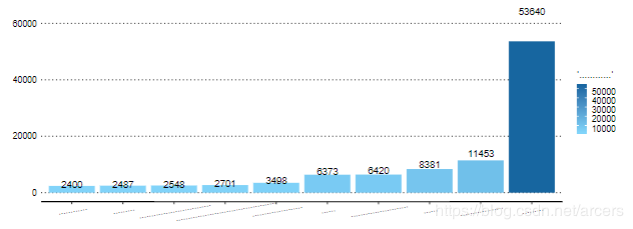

3.绘图乱码
文字解决了但是事儿没完，这是关于编码的第二个坑，就像下面这样，用ggplot2生成的图片中的中文字符全部变成了‘…’的形式。 
怀疑过字体问题、tex设置问题、操作系统以及人生。。。最终通过仔细查阅官方文档以及stackoverflow最终发现图形设备需要额外指定，方式为在头文件中加入如下’dev’的配置，当然也可以设置为其它的图形设备。
output:
pdf_document:
latex_engine: xelatex
dev: cairo_pdf
includes:
in_header: head.tex
其中图形设备可以替换为下列中的任何一个：bmp, postscript, pdf, png, svg, jpeg, pictex, tiff, win.metafile, cairo_pdf, cairo_ps, CairoJPEG, CairoPNG, CairoPS, CairoPDF, CairoSVG, CairoTIFF, Cairo_pdf, Cairo_png, Cairo_ps, Cairo_svg, tikz and a series of quartz devices including quartz_pdf, quartz_png, quartz_jpeg, quartz_tiff, quartz_gif, quartz_psd, quartz_bmp。 过这个坑花了不少时间，然而这并不是结束。当然图片乱码的问题除此之外也可以使用showtext解决。
参考链接： 问题：https://github.com/yihui/knitr/issues/889 文档：https://yihui.name/knitr/demo/graphics/ 文档：https://yihui.name/knitr/options/#plots https://blog.csdn.net/u012111465/article/details/79945372